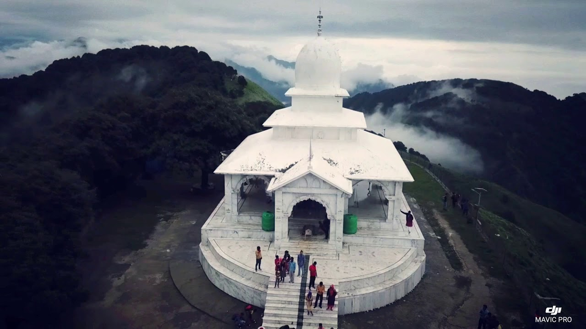
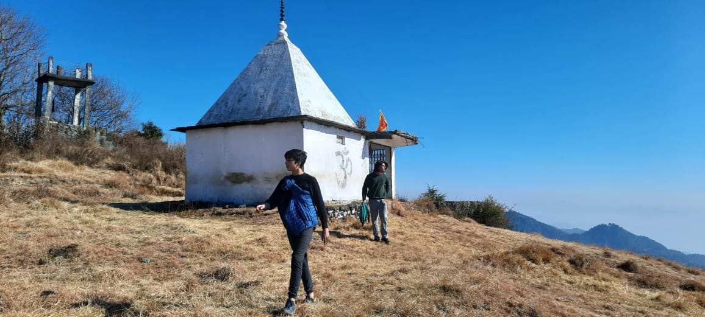

explore
Forest Walk :- Walks among the dense Ban forest (also known as black forest) to the Bhadraj Devta trek. A mesmerizing scene awaits at the start of your journey to Bhadraj Devta temple. Here you can enjoy the view with a cup of tea and company of your friends and family.
Bhadraj Temple:- Located at Bhadraj in the western region of Mussorie, Bhadraj Temple is a quaint temple dedicated to Lord Bal Bhadra (also known as Balram), brother of Sri Krishna. Bhadraj Temple is situated at the hilltop and the air and the atmosphere of the place feels calm and peaceful. This trek includes steep elevation which can only be enjoyed with slow walking and brief breaks to enjoy the view. With your favourite people by your side you can create memories which you'll cherish for life.
Jwala Devi Temple:- Jwala Devi Temple in Mussoorie famously known as Jwala Ji Temple, Jwala Devi Temple is center of faith and devotion for devotees of Goddess Durga Located at the top of Binog hill in Mussoorie at an altitude of 2104 mtrs, Jwala Devi Temple is surrounded by Oak and Deodar trees. Jwala devi Temple consists of an old stone idol of Goddess Durga is in the Jwala Ji Temple. Apart from pilgrims and devotees, nature lovers also visit the place frequently As surrounded by the thick green forest, Jwala Devi Temple is a major attraction for nature lovers Peace and calmness can be fell easily in the temple as it is far from city rush From the temple, visitors can see Yamuna river and Shiwalk range.
